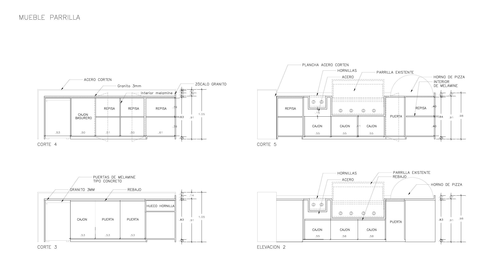
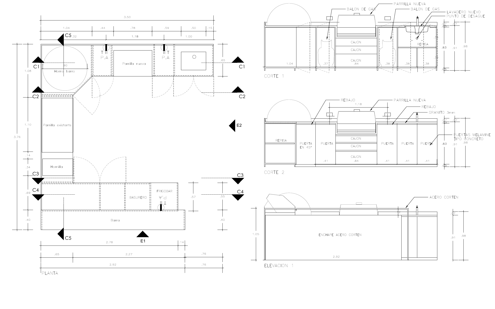

04 · Proyecto residencial
Terraza Manrique
Casa, comedor y zona de parrilla — un espacio exterior pensado para reunir, con pérgola, jardines verticales y sombras naturales.

Sobre el proyecto
Diseño e implementación de una terraza-comedor con zona de parrilla, integrando pérgola de listones metálicos, jardines verticales y una mesa central en piedra natural. La propuesta busca equilibrar arquitectura, vegetación y sombra natural, generando un espacio fresco y acogedor para reuniones familiares.
El proyecto incluyó la coordinación de la estructura metálica, la implementación del sistema de jardines colgantes, la zona de cocina exterior con horno y parrilla, y la selección de mobiliario y materiales para uso intemperie.
Renders

Planos técnicos

